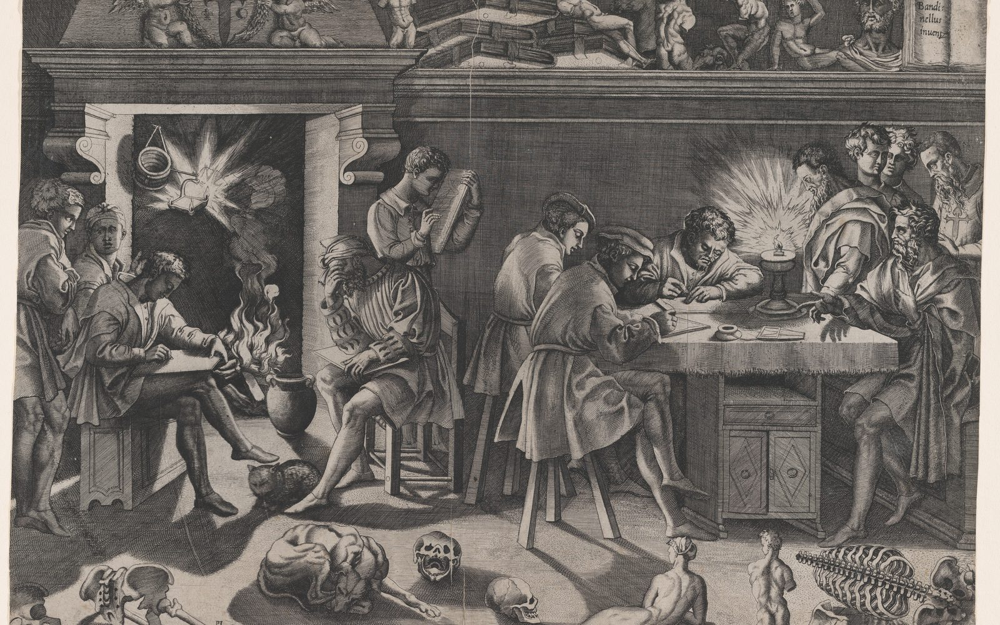
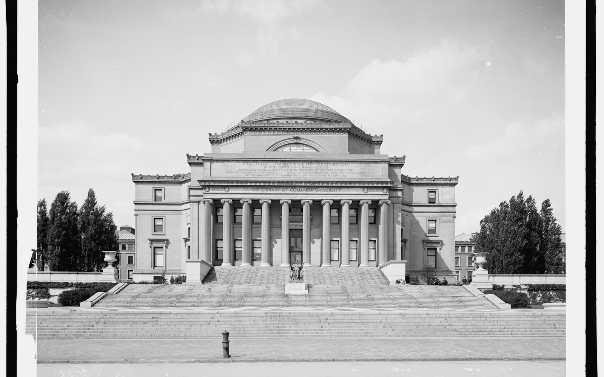
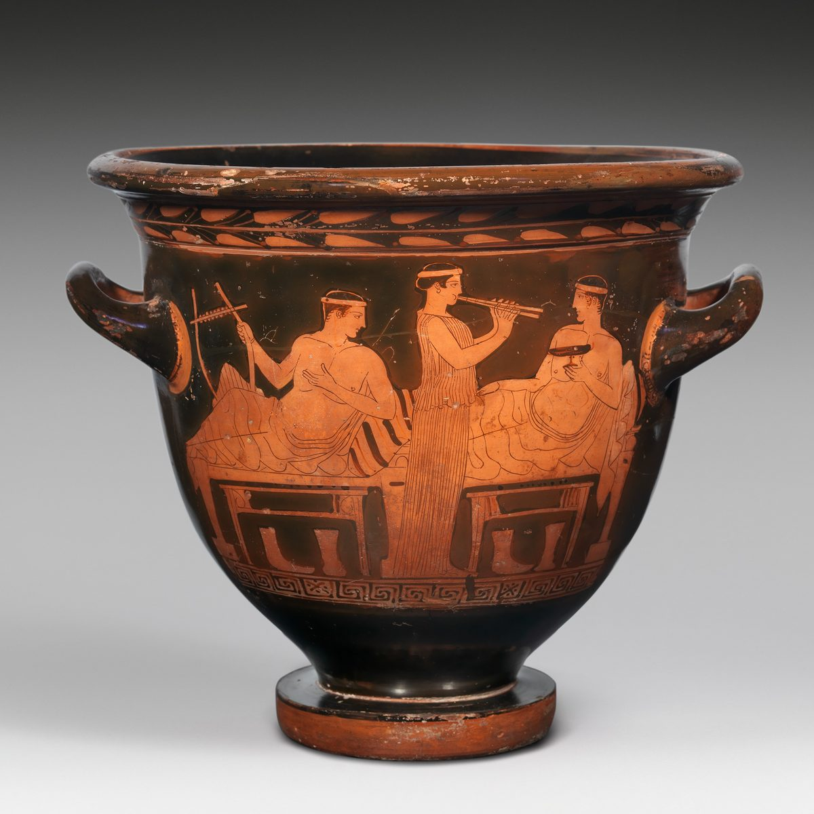
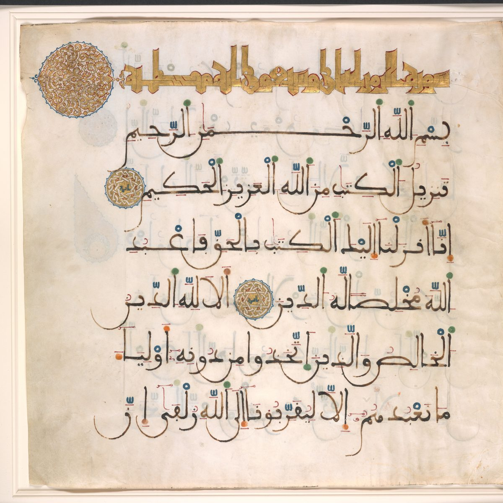
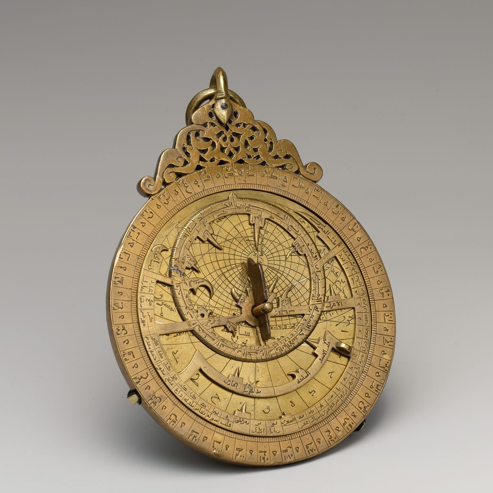
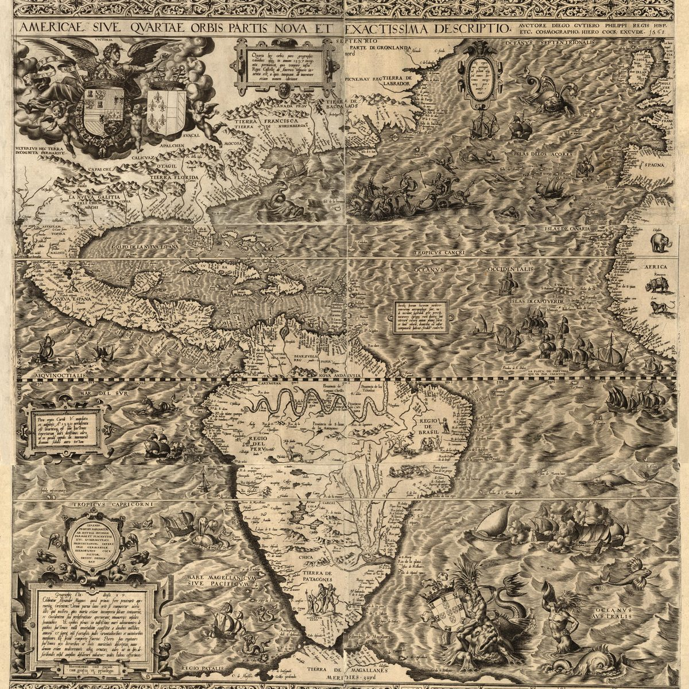
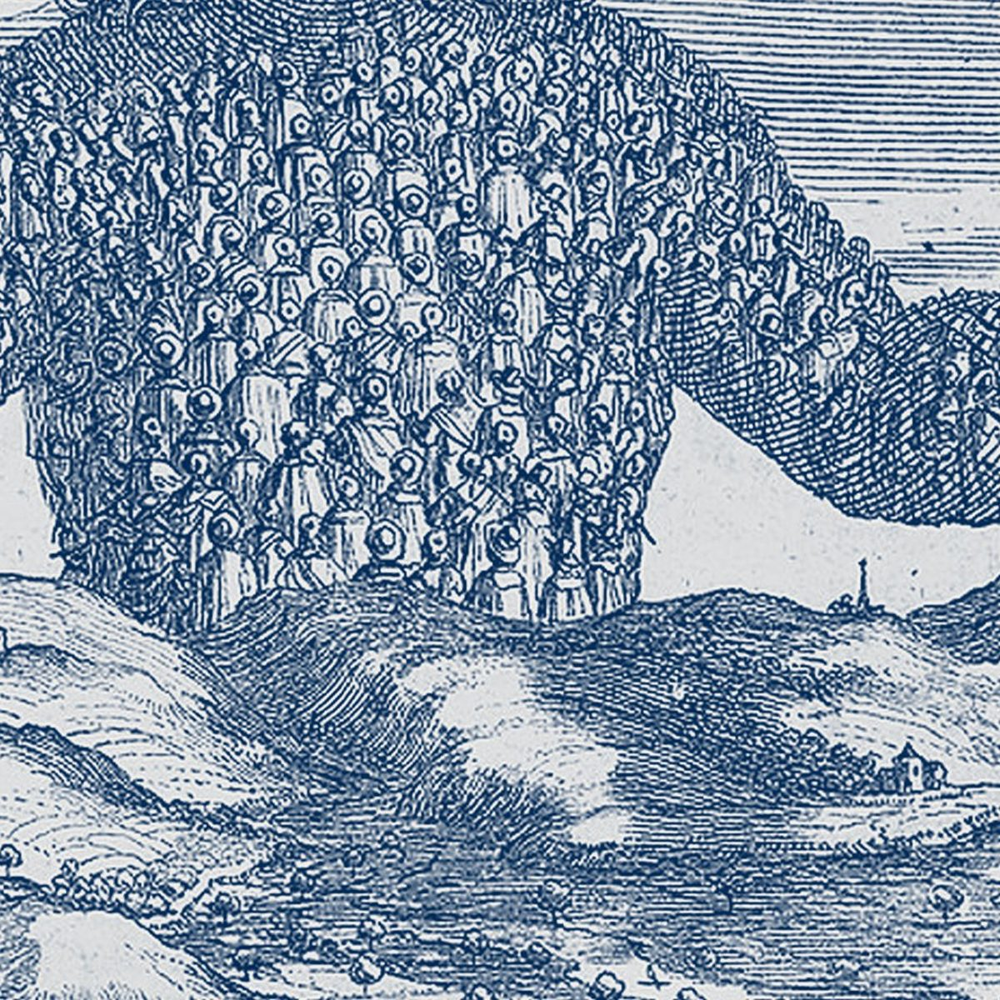
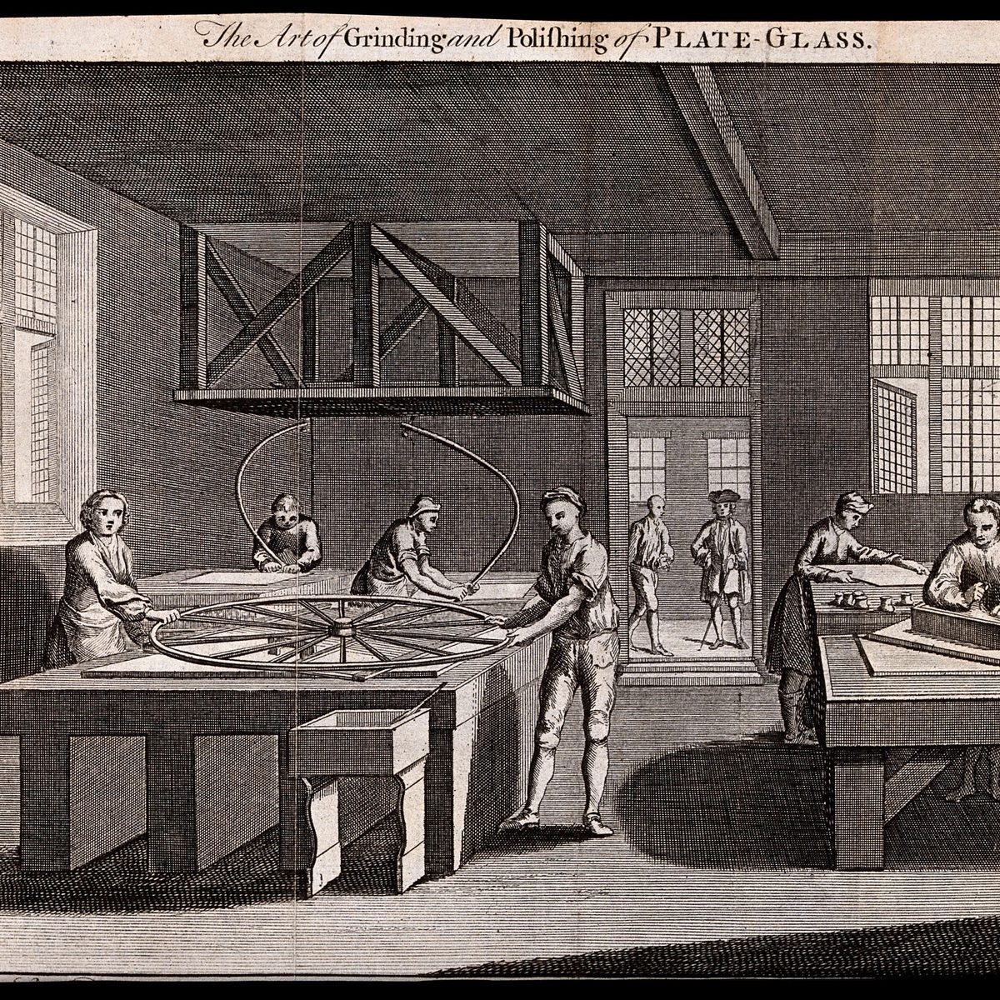
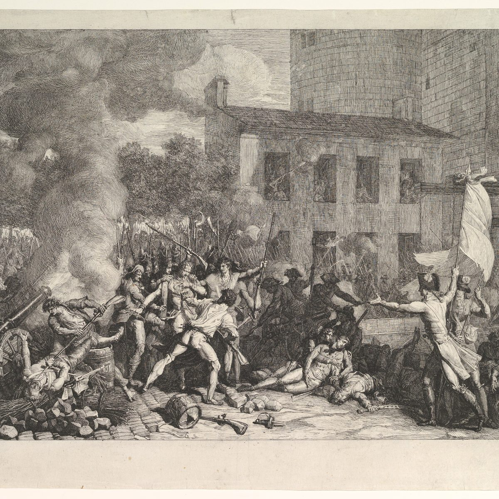
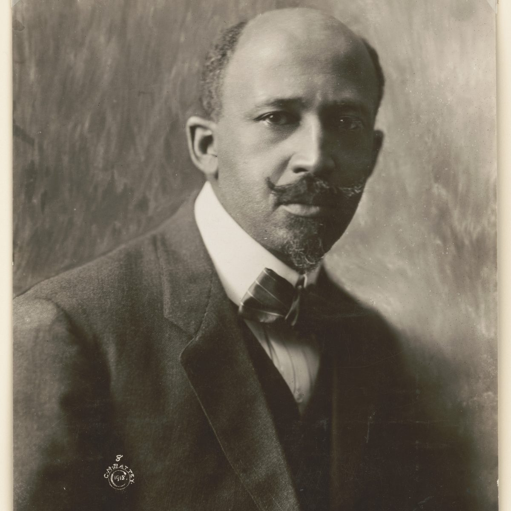

01 · 十二周
按弱点排，
不按书单顺序
每周 2–3 小时：听一期节目拿到地图，读指定的章节，做测验，周日前写一页纸。每一周都对着一个手里的决定读，书才留得住。

- 11 / 02第 1 周
霍布斯《利维坦》
第 13、14、16、17 章 + 第 15 章「愚人」
对着授权与责任：你给一个 agent 的规则
一页纸反方 → 一份给 agent 的信约 → 「责任在谁」的答案哪里要改 - 11 / 09第 2 周
柏拉图《理想国》
卷二整卷 + 卷六「船」487–489
对着「没有人会发现」时你做不做；选谁当负责人
一页纸你戴不戴戒指；给「选负责人」补柏拉图的反方 - 11 / 16第 3 周
亚里士多德《尼各马可伦理学》
卷一第 7 章 + 卷二
对着评价系统是在帮人还是在管人
一页纸把一个给用户打分的产品重写成「习惯养成装置」的规格 - 11 / 23第 4 周
马基雅维利《君主论》《论李维》
君主论 15–18、25 章；论李维 I.1–5
对着一次事故该救火还是借机改制
一页纸把一次事故当作「修堤的窗口」，用政治而不是工程理由重答 - 11 / 30第 5 周
斯密《国富论》
I.1–2、IV.2
对着保护本国农民还是让所有人少花钱
一页纸用无谓损失重算一个关税案例；再找斯密的例外替它辩护 - 12 / 07第 6 周
康德《道德形而上学奠基》
第二章（人性公式与目的王国）
对着「结果对大家都好」能不能瞒着做
一页纸把「默默采集数据」写成一条准则做普遍化测试，对照第 1 周的答案 - 12 / 14第 7 周
边沁 · 密尔《道德与立法原理》《功利主义》《论自由》
边沁第一章；功利主义第二章；论自由一、二章
对着多数人围攻一个观点时，该不该删帖
一页纸按密尔的四条理由重写一个社区的删帖规则 - 12 / 21第 8 周
洛克 · 卢梭《政府论》《论不平等》
政府论下篇 2、5、19 章；论不平等第二部分
对着收回委托出去的权力；劳动产权 vs 共同体
一页纸洛克与霍布斯对「收回 agent 权力」的分歧；一个产权案例两面写 - 12 / 28第 9 周
美洲征服维多利亚 · 拉斯卡萨斯 · The Broken Spears
维多利亚问题一；拉斯卡萨斯选段；Broken Spears 3–36 页
对着换到被决定的一方去看
一页纸挑一件只从主导方视角知道的事，用被动方的口吻写一遍 - 01 / 04第 10 周
福柯 · 尼采《规训与惩罚》《道德的谱系》
规训第三部分 1–3 章；谱系第一篇
对着标准是谁定的，装置如何变成眼睛
一页纸用福柯的三件工具审计一个给用户打分的产品 - 01 / 11第 11 周
杜波依斯 · 法农 · 阿伦特《黑人的灵魂》《论暴力》×2
杜波依斯第一章；法农与阿伦特各自的《论暴力》
对着同时从内外两边看自己：负担还是能力
一页纸两面都写；两篇《论暴力》各自最强的一段 - 01 / 18第 12 周
查克拉巴蒂 · 怀特 · 马克思《历史的气候》《殖民的似曾相识》《雾月十八日》
四论点；怀特全文；雾月开头一段
对着人类史和自然史什么时候该合在一起讲
一页纸重写一篇用地理解释文化的文章的方法说明
第二程：《圣经》《古兰经》、奥古斯丁、阿奎那、路德——「权威不来自同意」的一路；笛卡尔接「新想法从哪里来」；达尔文接「组合与新」；马克思接第 5 周的市场；托克维尔接第 7 周的多数；沃斯通克拉夫特与 Combahee 接第 11 周的双重视角。
02 · 脉络
八段主干，
五条纵线
一整年的书单其实在反复追问一件事：一个共同体凭什么成立、凭什么约束我、又把谁算作「我们」。上学期从「秩序是被发现的」走到「秩序是被约定的」；下学期看契约许下的承诺，以及它排除了谁。

- 01古典
自然秩序
柏拉图 · 亚里士多德 · 伊壁鸠鲁与斯多葛
好的城邦符合自然与理性；或者退回到个人的安顿。

红绘钟形陶瓶上的会饮场景，公元前 5 世纪。大都会艺术博物馆，CC0。 - 02启示
神圣秩序
《出埃及记》· 保罗 · 奥古斯丁 · 《古兰经》
立约与律法；信；两座城。

马格里布体《古兰经》页，约 1300 年。大都会艺术博物馆，CC0。 - 03中世纪
理性与信仰的调和
法拉比 · 伊本·鲁世德 · 阿奎那 · 克里斯蒂娜·德·皮桑
哲学能不能和启示相容；政治身体。

拉苏里王朝的星盘，1291 年。大都会艺术博物馆，CC0。 - 041500–1650
权威崩塌
马基雅维利 · 美洲征服 · 路德 · 笛卡尔
政治从道德里剥离；「谁算人」；良心高于教会；从「我思」重建确定性。

Diego Gutiérrez《美洲图》，1562 年。美国国会图书馆，无已知版权限制。 - 051650–1760
社会契约
霍布斯 · 洛克 · 卢梭
合法性来自同意，而不是自然或神。

《利维坦》扉页细部，Abraham Bosse 刻，1651 年。大英图书馆藏品扫描，公有领域。 - 061750–1860
现代社会的引擎
斯密 · 康德 · 边沁与密尔
市场；义务；功利——两套道德算法。

《磨光平板玻璃的技艺》，1747 年版画。惠康收藏，公有领域标记。 - 071776–1870
权利的扩张与裂缝
美 / 法 / 海地革命 · 沃斯通克拉夫特 · 托克维尔 · 密尔 · 废奴文本
契约许下的承诺，排除了谁。

Charles Thévenin《攻占巴士底狱》，1790 年。大都会艺术博物馆，CC0。 - 081850–今
怀疑与回望
马克思 · 达尔文 · 尼采 · 弗洛伊德 · 杜波依斯 · 甘地与安贝德卡 · 法农 · 阿伦特 · 福柯 · 种族·性别·性 · 气候与未来
表象之下起作用的力量；从边缘回看中心。

W. E. B. 杜波依斯，Cornelius M. Battey 摄，1918 年。美国国会图书馆，无已知版权限制。
- 权威从哪里来自然 → 神 → 同意 → 经济与历史 → 权力与话语
- 理性的边界亚里士多德 → 阿奎那、伊本·鲁世德 → 笛卡尔 → 康德 → 尼采、福柯
- 「我们」的范围城邦公民 → 信众 → 美洲之争 → 权利主体 → 被排除者自己发声
- 自由与秩序霍布斯 vs 洛克 vs 卢梭 → 密尔 → 福柯的「规训」
- 暴力与正当性马基雅维利 → 海地革命 → 法农 vs 阿伦特 vs 甘地
03 · 书库
四十七项必读，
库里有十二项
本地书库来自 GitHub 上的开放书库 HarborLibrary（13 个仓库、696 种），按 2021–22 必读书单逐项对过：47 项必读里有 11 项，加上另外找到的《君主论》共 12 项。
库里有（指定篇目）
- 柏拉图《理想国》
- 笛卡尔《谈谈方法》《第一哲学沉思集》
- 霍布斯《利维坦》
- 洛克《政府论》
- 卢梭《社会契约论》
- 斯密《国富论》《道德情操论》
- 潘恩《常识》
- 沃斯通克拉夫特《女权辩护》
- 托克维尔《论美国的民主》
- 密尔《论自由》
- 尼采《道德的谱系》
- 波伏娃《第二性》
缺，但公有领域可免费取得
- 亚里士多德
- 康德《奠基》
- 边沁
- 密尔《功利主义》
- 卢梭《论不平等》
- 杜波依斯
- 道格拉斯
- 甘地
- 安贝德卡
- 马克思《雾月十八日》
缺，在版权内
- 福柯《规训与惩罚》
- 法农《全世界受苦的人》
- 阿伦特《论暴力》
- 查克拉巴蒂
- 美洲征服单元
方法与来源
三条方法
- 反方先行：每周一页纸，第一段必须是「这位作者最强的反对者会怎么说」，第二段才是自己的看法。
- 每篇绑一个手里的决定：把书读成自己团队、产品、作品的规格说明。
- 每个场景答两遍：先「怎么做」，再「该不该」，检查两个答案是否一致。
书单来源
- 课程页（哥伦比亚学院核心课程）
- Bulletin：当前要求的作者与单元
- 2021–22 必读书单（PDF）；书单每三年修订一次
图片
- 《雅典学院》，Giovanni Volpato 据拉斐尔湿壁画所作的铜版画，约 1781 年。大都会艺术博物馆藏，CC0。 — The Metropolitan Museum of Art, New York (Open Access)，35.85.45；CC0。https://www.metmuseum.org/art/collection/search/716834
- 《巴乔·班迪内利的学院》，Enea Vico 刻，1544 年：烛光下的夜读与素描。大都会艺术博物馆藏，CC0。 — The Metropolitan Museum of Art, New York (Open Access)，17.50.16-135；CC0。https://www.metmuseum.org/art/collection/search/358113
- 哥伦比亚大学 Low 图书馆与「母校」像，约 1905 年，Detroit Publishing Co. 摄。美国国会图书馆藏，无已知版权限制。 — Library of Congress, Prints and Photographs Division，LC-DIG-det-4a12619 (Detroit Publishing Co. no. 018537)；No known restrictions。https://www.loc.gov/item/2016804796/
- 《利维坦》1651 年初版扉页，Abraham Bosse 刻 — 大英图书馆藏品扫描，公有领域（页面上做了双色处理）。https://commons.wikimedia.org/wiki/File:Leviathan_by_Thomas_Hobbes.jpg
- 红绘钟形陶瓶上的会饮场景，公元前 5 世纪。大都会艺术博物馆，CC0。 — The Metropolitan Museum of Art, New York (Open Access)，2013.158；CC0。https://www.metmuseum.org/art/collection/search/259196
- 马格里布体《古兰经》页，约 1300 年。大都会艺术博物馆，CC0。 — The Metropolitan Museum of Art, New York (Open Access)，42.63；CC0。https://www.metmuseum.org/art/collection/search/450486
- 拉苏里王朝的星盘，1291 年。大都会艺术博物馆，CC0。 — The Metropolitan Museum of Art, New York (Open Access)，91.1.535a–h；CC0。https://www.metmuseum.org/art/collection/search/444408
- Diego Gutiérrez《美洲图》，1562 年。美国国会图书馆，无已知版权限制。 — Library of Congress, Geography and Map Division，G3290 1562 .G7 (Rosenwald Collection no. 1303)；Public Domain。https://www.loc.gov/item/map49000970/
- 《利维坦》扉页细部，1651 — 大英图书馆藏品扫描，公有领域。
- 《磨光平板玻璃的技艺》，1747 年版画。惠康收藏，公有领域标记。 — Wellcome Collection, London，Wellcome Collection work n7jqayk4 / image V0024060；Public Domain。https://wellcomecollection.org/works/n7jqayk4
- Charles Thévenin《攻占巴士底狱》，1790 年。大都会艺术博物馆，CC0。 — The Metropolitan Museum of Art, New York (Open Access)，2008.592；CC0。https://www.metmuseum.org/art/collection/search/384288
- W. E. B. 杜波依斯，Cornelius M. Battey 摄，1918 年。美国国会图书馆，无已知版权限制。 — Library of Congress, Prints and Photographs Division，LC-DIG-ppmsca-38818；No known restrictions。https://www.loc.gov/item/2003681451/
- 金戒指，希腊化时期，约公元前 4 世纪末至前 3 世纪 — 大都会艺术博物馆藏（10.132.1，1910 年购入），公有领域（CC0）。https://www.metmuseum.org/art/collection/search/248265